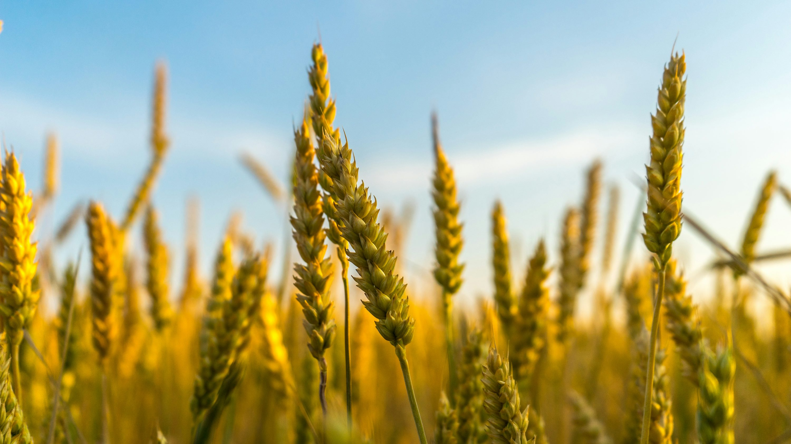

Crop Analysis
🌾 Crops Details
Important Points
- Type of Crop: Rabi Crop
- Uses: Food grain for making flour
- Climate Preferred: Cool and dry
- Soil Preferred: Loamy soil rich in humus
Parameters
- Optimum Temperature: 10°C–25°C
- Rainfall: 75–100 cm annually
- Soil: Fertile, well-drained
- Suitable for your region → Point to be noted